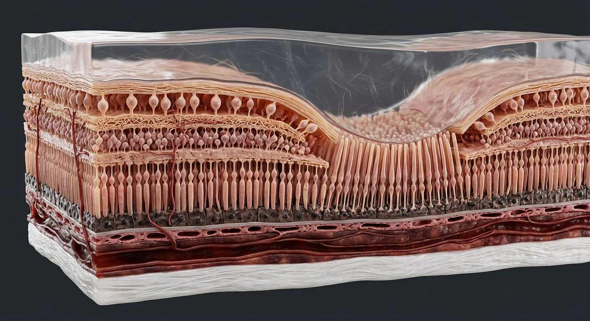
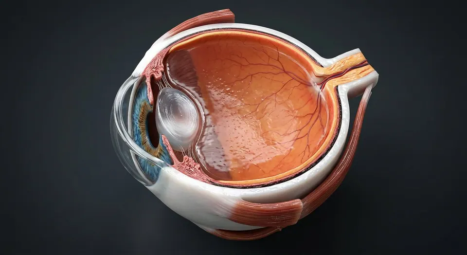
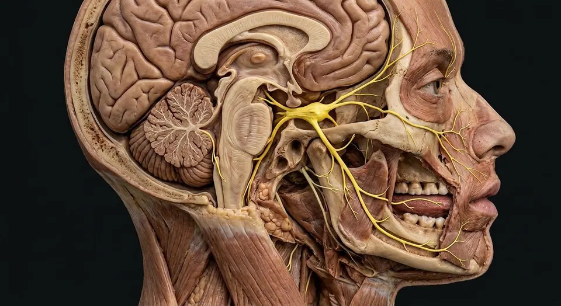

ORGAN → UNDER THE LENS
Layered retina cutaway
Tap to compare the organ region with a tissue-level teaching illustration.
Read about Horizontal cells ↓Rods, cones, bipolar and ganglion circuits; fovea, optic disc, pigment epithelium and dual blood supply.

Internal limiting membraneNerve fiber layerGanglion cell layerInner plexiform layerInner nuclear layerFovea centralisCentral retinal arteryOptic discMüller gliaOuter plexiform layerOuter nuclear layerExternal limiting membranePhotoreceptor segmentsConesRodsRetinal pigment epitheliumBruch membraneChoriocapillarisLight traverses inner retinal layers before reaching rods and cones against retinal pigment epithelium (RPE). Neural signaling runs the opposite direction: photoreceptors → bipolar cells → ganglion cells → optic nerve. Horizontal and amacrine cells modify lateral signaling. The foveal center has dense cones and displaced inner layers for acuity, while the optic disc has no photoreceptors. Inner retina is supported mainly by central retinal circulation; photoreceptors and RPE depend strongly on the choriocapillaris.
These are educational cutaways, not literal magnifications of an organ pixel or laboratory slides. A ring marks the approximate tissue region; part-specific lines appear only where identifiable.
Tap to compare the organ region with a tissue-level teaching illustration.
Read about Horizontal cells ↓These 18 structures describe anatomy related to the chapter’s regional illustration. Each entry separates location, function and a clinical point.
Müller-cell endfeet make retinal inner boundary against vitreous.
What it doesSupports vitreoretinal interface.
Clinical connectionEpiretinal traction can distort macula.
Unmyelinated ganglion axons converge toward optic disc.
What it doesConducts output to optic nerve.
Clinical connectionGlaucoma thins nerve fiber layer.
Retinal ganglion somata whose axons become optic nerve.
What it doesFinal retinal output neurons.
Clinical connectionGanglion-cell loss contributes to glaucomatous vision loss.
Synapses among bipolar, amacrine and ganglion processes.
What it doesProcesses contrast and temporal information.
Clinical connectionLayer distortion can accompany retinal edema.
Bipolar, horizontal, amacrine and Müller cell bodies.
What it doesRelays and modulates photoreceptor signals.
Clinical connectionMicrovascular ischemia affects inner retinal circuitry.
Photoreceptor terminals synapse with bipolar and horizontal cells.
What it doesFirst central synaptic relay for light signals.
Clinical connectionFluid at this level can disturb signal transfer.
Nuclei of rods and cones.
What it doesSupports photoreceptor cell population.
Clinical connectionThinning indicates photoreceptor loss.
Adherens junction belt between Müller cells and photoreceptors.
What it doesProvides organized retinal scaffold.
Clinical connectionContinuity is assessed in retinal imaging.
Rod and cone inner/outer segments facing RPE.
What it doesCapture photons and start phototransduction.
Clinical connectionOuter-segment injury impairs vision despite intact inner retina.
Pigmented monolayer adjacent to photoreceptors and Bruch membrane.
What it doesRecycles visual pigment, phagocytoses shed discs and forms outer blood–retinal barrier.
Clinical connectionSeparation from neurosensory retina is a retinal detachment plane.
Highly light-sensitive photoreceptors predominating away from foveal center.
What it doesDim-light and peripheral vision.
Clinical connectionRod loss impairs night vision.
Color- and acuity-sensitive photoreceptors concentrated at fovea.
What it doesHigh-resolution daylight and color vision.
Clinical connectionCone dysfunction reduces central/color vision.
Radial support cells spanning retinal layers.
What it doesMaintain homeostasis, structure and metabolic support.
Clinical connectionTheir endfeet contribute to limiting membranes.
Small central pit with closely spaced cones and displaced inner layers.
What it doesPeak spatial acuity.
Clinical connectionFoveal injury causes major central visual impairment.
Ganglion axons and central retinal vessels pass through; no rods or cones.
What it doesForms physiological blind spot.
Clinical connectionDisc swelling can reflect raised intracranial pressure.
Ophthalmic branch entering optic nerve and supplying inner retinal layers.
What it doesPerfuses much of inner retina.
Clinical connectionOcclusion can cause acute monocular visual loss.
Dense vascular bed of choroid external to Bruch membrane.
What it doesSupplies outer retina and RPE by diffusion.
Clinical connectionChoroidal circulation is crucial for photoreceptor viability.
Multilayered extracellular sheet between RPE and choriocapillaris.
What it doesSupports nutrient exchange.
Clinical connectionAge-related changes are associated with macular disease.
These 2 additional entries give anatomical context. They are deliberately not assigned a photographic pin on the regional image.
Interneurons in outer retina connecting photoreceptor–bipolar synapses.
What it doesShape lateral inhibition and contrast.
Clinical connectionNot direct optic-nerve output cells.
Diverse interneurons at inner plexiform synapses.
What it doesModulate timing and spatial patterns of ganglion-cell output.
Clinical connectionDifferent classes serve different retinal computations.
Short answers grounded in the structures described above. Use the illustrated guide for anatomical context.
Photoreceptors lie in the outer neural retina next to retinal pigment epithelium, even though incoming light first passes through more internal layers.
Rods are especially sensitive in low light; cones support high-acuity and color vision, particularly near the fovea.
Rod and cone inner/outer segments facing RPE. Function: Capture photons and start phototransduction.
Pigmented monolayer adjacent to photoreceptors and Bruch membrane. Function: Recycles visual pigment, phagocytoses shed discs and forms outer blood–retinal barrier.
Function: Peak spatial acuity. Small central pit with closely spaced cones and displaced inner layers.
Follow these connected structures and body systems in the illustrated atlas.
 Eye · microscopic layersThree ocular coats, five classical corneal layers, aqueous route, lens suspension, macula and optic disc.↗
Eye · microscopic layersThree ocular coats, five classical corneal layers, aqueous route, lens suspension, macula and optic disc.↗
EyeSagittal section: an optical instrument that focuses light onto a neural film.↗
Trigeminal nerve · CN VMap facial sensation and masticatory motor fibers without confusing trigeminal CN V with facial CN VII.↗General anatomy references and related source chapters for continued study. These links do not make the digital illustrations clinical images or certify every anatomical variant.
This educational page is not medical advice and has not undergone formal clinical peer review. Spotted an error? Contact the editor.
Open the realistic interactive plate, label lines, focus view and self-test.